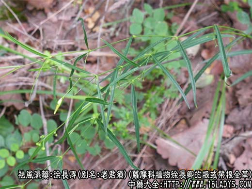
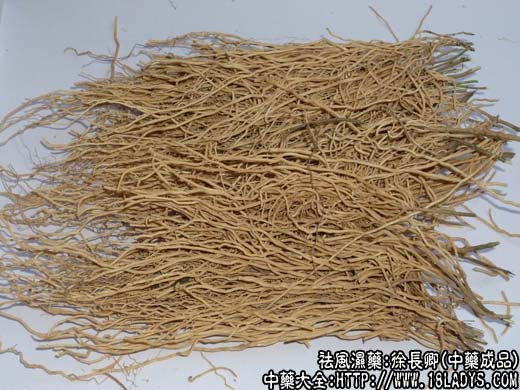
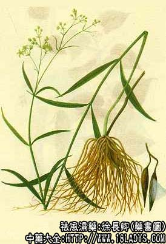

徐长卿为少常用中药。始载《神农本草经》列为下品。
别名：老君须、鬼督邮、石下长卿。
来源：为萝摩科植物徐长卿的根或带根全草。野生与栽培均有。
产地：主产于河北、河南等地。
性状鉴别：干燥的全草茎呈细圆柱状，表面灰绿色，基部淡紫色，具细纵条纹。质稍脆，折断面纤维性。叶纸质、灰绿色。木部细小，黄棕色。根细长、多数丛生、质脆，断面有粉性。气香、味微辛。
主要成分：全草含牡丹酚，肉珊瑚甙元，去酰牛皮稍甙元。根含黄铜甙、糖类、氨基酸、牡丹酚等。
功效与作用：全草水煎剂对痢疾杆菌、金黄色葡萄球菌等有抑制作用及镇痛作用。
炮制：切段，生用。
性味：辛、温。
归经：入心、脾经。
功能：祛风止痛、温经通络、解读消肿。
主治：风湿性关节痛、胃痛、跌打肿痛、肝硬化腹水、月经不调。
临床应用：徐长卿味辛性温，辛能发汗解表，理气散结，温能散里寒而止痛，故能祛风湿，通经络而止痛。治风寒湿痹，常与猪肉、白酒炖服；治胃痛，常与延胡索配伍；鲜品生用捣敷、治毒蛇咬伤也很有效。
此外，徐长卿制成片剂口服，治疗慢性支气管炎有率高达84%。实践证明，徐长卿有很好的消炎、化痰、止咳、平喘等作用。
使用注意：体弱者忌服。
用量：3～9g，入丸散或浸酒服，外用：煎水洗或捣敷患处。
处方举例：1、治风湿痛：徐长卿根24g，猪肉（瘦）120g，老酒60g，加水煎成半碗，饭前服，日服二次。（《福建民间草药方》）。
2、治疗精神分裂症（啼哭、悲伤、恍惚）：徐长卿15g，泡茶当水饮（《吉林中草药》）。